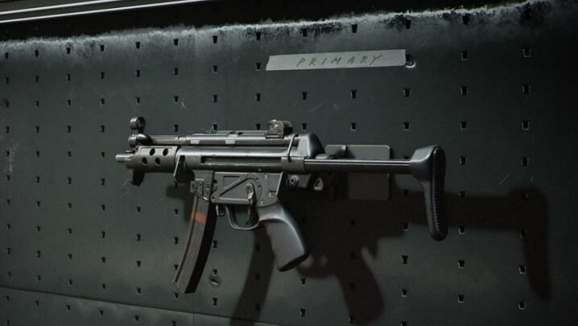
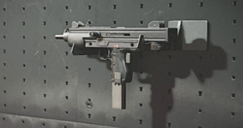
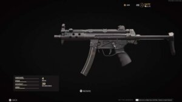
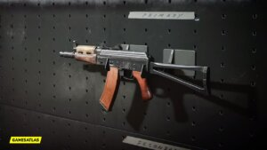
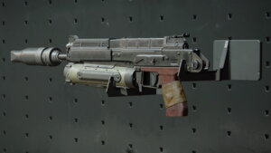
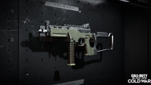

Top 5 SMGs in Call of Duty Black Ops Cold War
Are you an SMG main looking to spice up your gameplay? Here are some of the best SMGs for every playstyle.
Sub-machine guns are best reserved for players who like to get in the middle of the chaos, opting for close range gunfights instead of ranged play. Thankfully for SMG, there are no shortage of viable SMGs all capable of putting you at the top of the leaderboard. Despite these threads of commonality that bind SMGs together, the variety of options give SMG players different ways to style their gameplay. Here is our list of the best SMGs in CoD Black Ops Cold War right now.
Milano 821 – Slow and steady wins the race
One of the SMGs that have suffered the most nerfs from Treyarch since the launch of Cold War, however has remained an incredibly powerful weapon to add to any SMG player’s arsenal. The Milano’s faults are quite apparent and on a surface level make it appear less appealing, as it has the lowest rate of fire among all SMGs. The Milano also has rather middling damage, but the weapon’s accuracy stands as the gun’s primary draw.
With such minimal recoil, this is the SMG for you if you want your shots to count and avoid the ‘spray and pray’ classic SMG trope. Attachments such as the Field Agent Grip and Steady Aim Laser only enhance the best assets of this weapon.
MP5 – The franchise favorite
The undisputed holy grail of SMGs throughout Call of Duty’s history has once again found itself in the upper elechon of short ranged weapons in Cold War. This mainstay of the franchise has remained among one of the most balanced SMGs in the game. The MP5’s rate of fire outclasses most of its counterparts. To optmizie this build you should pick attachments that decrease the sprint to fire time, reload speed, precision.
Speed tape and the collapsed stock help truly unlock the potential of this SMG. Though with recent nerfs to the gun’s damage, the MP5 still has some of the best damage for its rate of fire in the game. Thriving on maps like Moscow, Armada, and Cartel this SMG will dominant in tight corners and close quarters.
AK-47u – Firepower of an AK, handling of an SMG
A testament to how powerful this SMG is comes through the fact that the Call of Duty League reached a gentlemen’s agreement (another word for a soft competitive ban) on the AK-47u. The distant cousin of the AK-47, which has dominanted Call of Duty titles throughout the years, the submachine gun variant is seemingly just as damaging. Consistently the AK-47u has had the highest firepower and damage per shot among SMGs, and is entirely capable of keeping pace with even most ARs in Cold War.
Paired with the SMG’s insane rate of fire, the only detriment the AK-47u seems to have is its inherent inaccuracy. Attachments like the Muzzle Brake 5.45 works to combat this inaccuracy problem and make you of an even more efficient killing machine.
The Bullfrog – Firepower with a side of recoil
The Bullfrog easily has the highest magazine capabity out of all other SMGs with a rate of fire to match, easily blowing through magazines to create the ultimate spray threat. In a short range confrontation, there may not be any better alternative considering you will physically out gun and out shoot your opponents easily. The glaring issue with the Bullfrog however is that this spray, even when aiming down sights, is not fixable without the help of attachments.
Attachments such as the Spetznaz Grip and Speed Tape make the wildly unpredictable bullet trajectory slightly more manageable while also helping the SMG’s mobility by decreasing sprint to fire time. Many of the attachments to fix these issues limit the range of the Bullfrog, however at a distance is certainly not where you want to play this SMG anyway. Personally, this is the SMG I’ve had the most fun with in match making.
LC10 – Bridging the gap between ARs and SMGs
One of the newer weapons to be introduced, the LC10, much like it’s rather odd shape, takes a very niche position in its role as an SMG. The LC10 has a far greater range than almost all its SMG counterparts though comes at the expense of its damage output. Though many may consider this SMG to occupy a grey area between ARs and SMGs without doing either perfectly, the LC10 has plenty of experimental builds that can make this a viable option.
The 13.9” Task Force barrel attachment brings the LC10 back up to speed in the damage department, making it comparable to the AK-47u though with one less starting magazine. The Salvo 52 RND Fast Mag allows you to play this load out fast while keep the range advantage and make the most out this multifaceted gun.